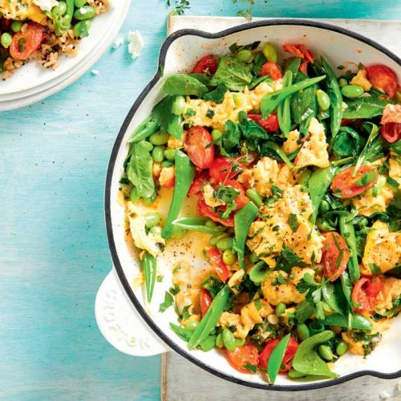

GLUTENFREE

Easy veggie rice scramble
This egg and veggie rice dish is ready in under 20 minutes and makes for a satisfying high-protein midweek meal.
Serves: 4
Time to make: 15 mins
Hands-on time: 10 mins
Nutrition Info (per serve)
Calories : 543cal
Kilojoules : 2280kJ
Protein : 25.4g
Total fat : 24.4g
Saturated fat : 7g
Carbohydrates : 51.3g
Sugars : 5.5g
Dietary fibre : 9.2g
Sodium : 266mg
Calcium : 132mg
Iron : 5.7mg
Ingredients
2 cloves garlic, thinly sliced
2–3 spring onions, chopped
8 eggs
2 tablespoons chopped parsley, plus extra, to serve
1 tablespoon lemon thyme leaves, plus extra, to serve
7oz punnet grape/cherry tomatoes, halved
7oz packet frozen shelled edamame beans, thawed
5oz sugar snap peas, trimmed, halved
4oz baby spinach leaves
2 x 9oz pouches microwavable brown rice
3oz goat‘s cheese, crumbled
Instructions
1. Heat 1 tablespoon olive oil in large non-stick pan over medium- high heat. Add garlic and half the shallots. Saute 1 minute. Whisk eggs in a large bowl and season well. Pour the eggs into the pan.
2. Carefully move the egg mixture across the pan with a spatula to create folds. Add the herbs and vegetables. Cook for 3–4 minutes, or until the vegetables are warmed through and egg is just set.
3. Heat the rice according to the packet directions. Divide the rice between the serving plates or bowls. Spoon over the egg and veggie scramble. Crumble over goat‘s cheese. Scatter with the extra herbs, remaining shallots and cracked black pepper.